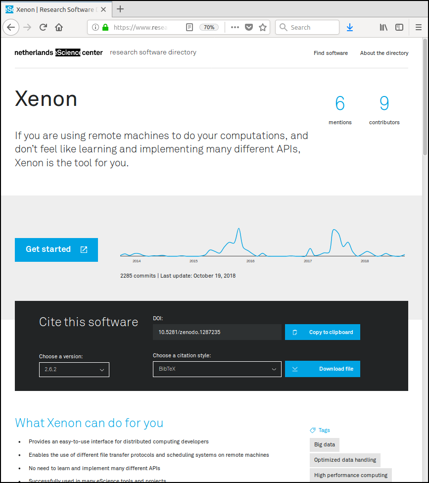
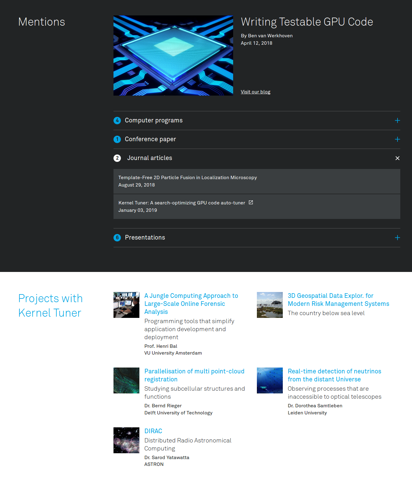
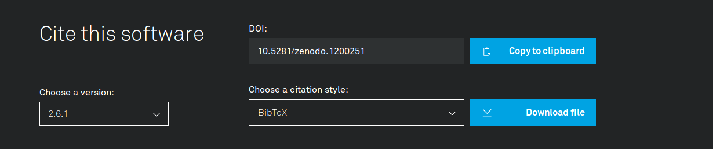
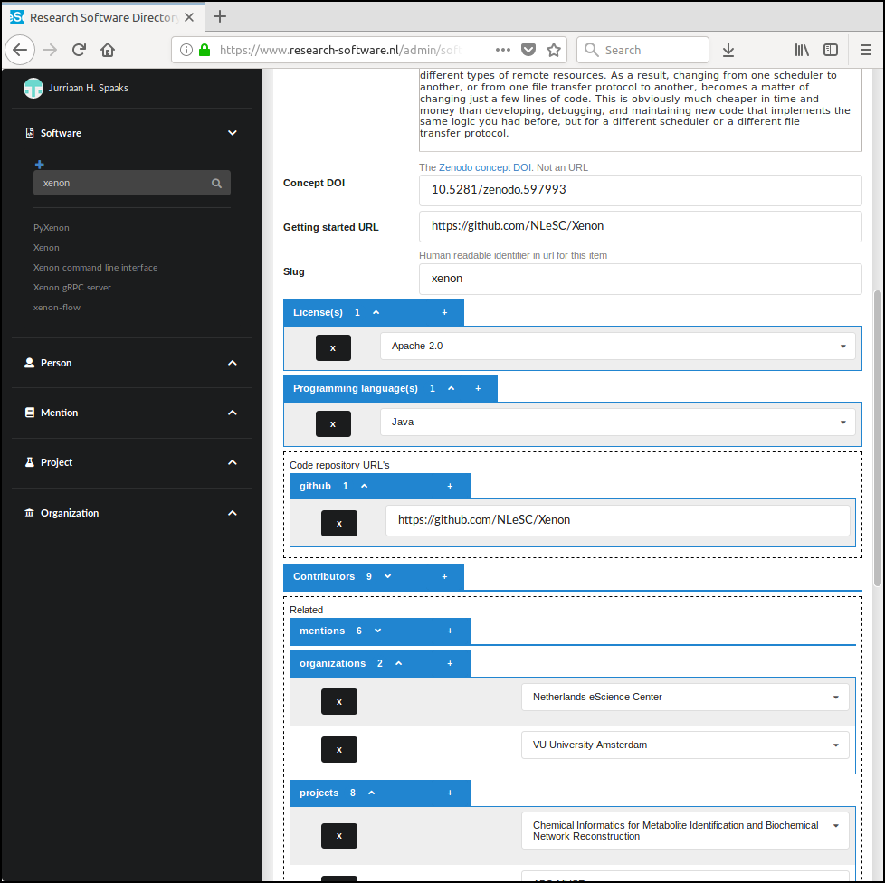

Authors:
The Netherlands eScience Center currently employs about 50 Research Software Engineers who work side-by-side with domain scientists to address technological challenges that need to be overcome in order to answer the research questions. As a result, much of the scientific output of our institute comes in the form of software. To show the outside world that our work matters, we wanted a mechanism to improve transparency of our organization, some sort of virtual shop window if you will. This ultimately resulted in development of what we call the Research Software Directory.
A Research Software Directory is a kind of content management system, tailored to software. A Research Software Directory aims to improve the findability, citability, and reproducibility of the software advertised in it. In practice, this entails creating a so-called product page for each software package which we want to showcase. A product page presents a given software package along with its relevant context (Figure 1).

Figure 1. Research Software Directory product page. For the live version, go here.
So what makes a good product page? Ultimately, we think it should promote adoption of the software by others. To better understand what that meant in practice, we enlisted the help of communication and design agency Silo, and quickly realized that adoption of software is actually preceded by a few other steps, as follows.
At face value, these steps may seem obvious, but it is important to realize that failing even a single step of this 'journey' ultimately prohibits adoption of the software. Luckily, for each step there are things that we as developers can do to help make the life of our users easier.
For example, most people nowadays use search engines such as Google whenever they are looking for something, so being indexed by Google is an important factor in being found at all. Therefore, in order to maximize our chances of being listed in the first couple of pages of search results, we follow Google's advice regarding so-called search engine optimization (SEO). Generally speaking, Google will like your site better if the search engine has some understanding of what your web page is about. To this end, we add metadata to each product page. The metadata uses vocabularies from schema.org and CodeMeta to help describe the page's subject in such a way that Google's indexing algorithm can understand it.
It is important to realize though, that many SEO techniques are geared towards optimizing the experience that a website provides to a human visitor. Generally speaking, human visitors will like your site better if it presents relevant information in a clear and concise manner. So, when describing the software, we try to make it very easy to consume the page's content, by using inclusive language as much as possible, and by steering clear of acronyms.
Similarly, human visitors benefit if the subject of a web page is presented alongside its context. For this reason, the software on each product page is presented along with related presentations, blogs, YouTube videos, whitepapers, tweets, posters, peer-reviewed papers, as well as descriptions of projects in which the software was applied (Figure 2). This allows people to quickly judge if a given software package is interesting for them, while providing machines with the necessary information to place the web page in the appropriate filter bubble.

Figure 2. These sections help visitors judge the software by placing it within the relevant (scientific) context. For the live version, go here.
By offering attractive product pages with relevant information, and by following Google's SEO guidelines, the Research Software Directory thus improves the findability of our software, for machines as well as for humans.
So let's say that a visitor has used Google to look for a solution to a problem they are having, and found one of our product pages. They liked what they saw there, but now they want to give our software a whirl. Where should they start? For this, we added a prominent Get started button, which links to additional materials that help first time users to get started with the software. Examples of such materials include tutorials (e.g. PDF documents), interactive examples (e.g. on codeocean.com, mybinder.org, or renkulab.io), and video walkthroughs (e.g. demonstrating how to use a graphical interface to accomplish a given task). Naturally, creating such additional materials requires an extra effort, sometimes considerably so, but good entry level documentation can be really valuable in attracting users.
By designing the product pages in this way, we feel that the findability of software is reasonably well covered. Next, let's take a look at citability.
We chose to make the Cite this software element (Figure 3) quite a prominent part of the product page. We did so because it emphasizes that software is something that you can, and indeed should, cite. Furthermore, we wanted to make citing as easy as possible. The importance of the latter reason should not be underestimated: Citing research software is intrinsically more difficult than citing, say, research papers, because relevant information is often a lot less obvious. For example, a person wanting to cite software may face questions like:
my_scripts/run.m or analysis.py)?
Figure 3. 'Cite this software' element.
The burden of answering these questions typically lies with the person who wants to cite, even though we, as the developers of the software, are in a much better position to answer those questions accurately and consistently. The Cite this software element therefore provides the information necessary for citation. The element is constructed as follows. Firstly, we keep our source code in public repositories on GitHub. For our repositories, we have enabled the GitHub-Zenodo integration. Thanks to this integration, Zenodo stores a snapshot of our code whenever we make a release on GitHub. The snapshot is stored for long term archiving, and Zenodo sticks a persistent identifier (a Digital Object Identifier or DOI, to be exact) on it, so that the specific version of the software may be referenced. Of course this doesn't guarantee full reproducibility, but at least it is a step in the right direction. Zenodo further provides another DOI that serves as an identifier for the software project as a whole (i.e., all versions together). Zenodo refers to this version-agnostic type of identifier as a conceptDOI.
This simple workflow provides basic citability, meaning that without doing anything else, we can already adorn the product page with DOIs for each version of the software. That's nice, but of course we want to facilitate automated generation of reference manager files (specifically, BibTeX, EndNote and RIS files), for each version of the software. To this end, we ask our engineers to add a CITATION.cff file to their source code repositories. In short, such files constitute an instruction to users of the software on how it should be cited [1, 2]. Because CITATION.cff files are formatted according to the Citation File Format specification, they are machine readable, which in turn allowed us to write the cffconvert Python package that can read citation metadata and convert it to various reference manager formats.
After designing and prototyping the frontend, we started work on the backend so we could feed the frontend with the necessary data. We realized that much of the data that we needed was already available from sources such as Zenodo, GitHub, Zotero (the reference manager we use to keep track of our organization's output) and so forth. Some of these data sources provide access to their data via an API, but for some others, the data were available, but not in a very structured way. As an example, we wanted to include the contents of our blog, which uses the Medium publishing platform. As far as we could determine, the blog posts could not be retrieved via the API, so we ended up writing a simple Python script using the BeautifulSoup library to harvest this data. Similarly, we wanted to include project descriptions from https://www.esciencecenter.nl/projects which were not accessible via an API, so again we used BeautifulSoup to harvest what we needed.
With the data harvesting mechanisms in place, we were left with designing a system that would allow our engineers to create, edit, and delete product pages. To make life as easy as possible for them, we chose to use a web form for this. For lack of a better name, we refer to the web form simply as the Admin interface (Figure 4).

Figure 4. Admin interface to a product page.
For each input field, the Admin interface provides brief instructions on what to enter, so our engineers know what is expected of them. The Admin interface also performs formal form validation against the schema, such that the data that ends up being fed to the frontend is predictable, which in turn leads to cleaner code in the frontend.
Most of the required fields need to be filled in only once; for example, the conceptDOI, repository URLs, the name of the package, and the descriptions will not change very often. Some other fields however are changeable, for example the list of contributors may grow or there may be additional mentions. Generally speaking, our engineers revisit their pages every couple of months or so, to see if anything needs to be added.
At the Netherlands eScience Center we have created the Research Software Directory to improve the findability, citability, and reproducibility of the software that we create in our projects. We use it to show our software to the world, and to illustrate the impact our software has had in research. You can find our Research Software Directory at research-software.nl. Like all our software, it is open source and completely free to use and adapt. So if you're interested, feel free to set up your own instance!